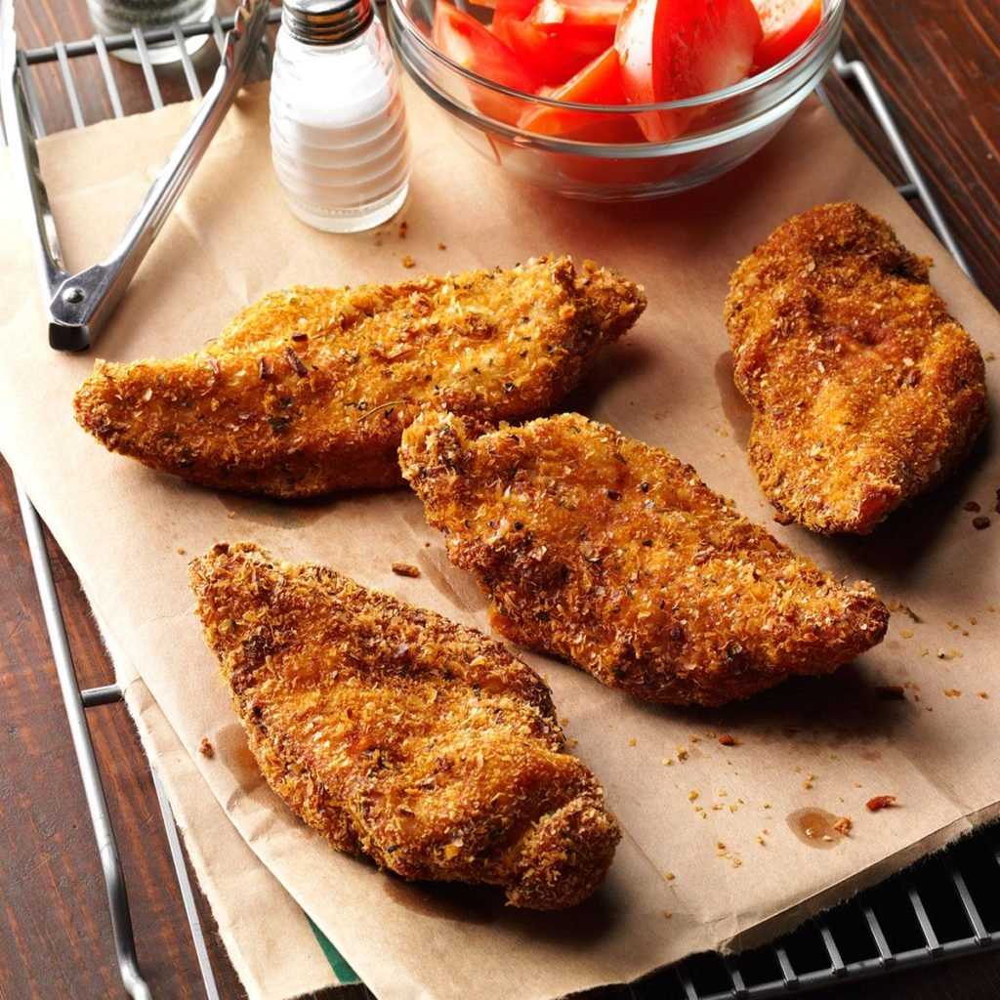

Gram’s Fried Chicken
Ingredients
1 large egg
1 cup 2% milk
2 cups mashed potato flakes
1 tablespoon garlic powder
1 tablespoon each dried oregano, parsley flakes and minced onion
1/2 teaspoon salt
1/4 teaspoon coarsely ground pepper
4 boneless skinless chicken breast halves (6 ounces each)
Oil for frying
Directions
- In a shallow bowl, whisk egg and milk. In another shallow bowl, toss potato flakes with seasonings. Remove half of the potato mixture and reserve (for a second coat of breading).
- Pound chicken with a meat mallet to 1/2-in. thickness. Dip chicken in egg mixture, then in potato mixture, patting to help coating adhere. Arrange chicken in an even layer on a large plate. Cover and refrigerate chicken and remaining egg mixture 1 hour. Discard remaining used potato mixture.
- In a 12-in. cast-iron or other deep skillet, heat 1/2 in. of oil over medium heat to 350°. For the second coat of breading, dip chicken in remaining egg mixture, then in unused potato mixture; pat to coat. Fry chicken 4-5 minutes on each side or until golden brown and chicken is no longer pink. Drain on paper towels.
Nutrition Facts
1 chicken breast half : 469 calories, 28g fat (3g saturated fat), 121mg cholesterol, 269mg sodium, 16g carbohydrate (3g sugars, 2g fiber), 38g protein.
Total Time
Prep: 20 min. + chilling Cook: 10 min.